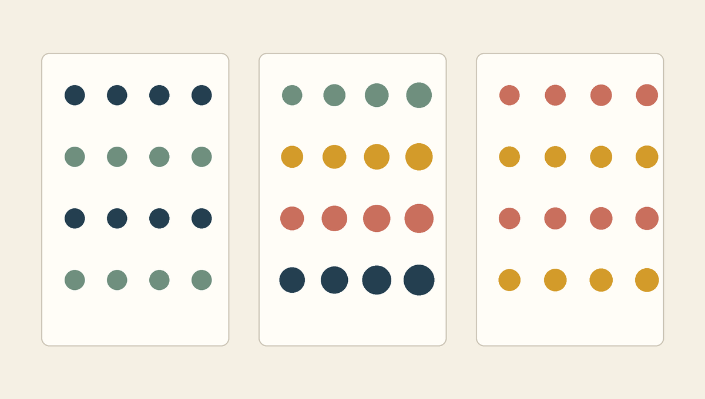

여러 값을 묶고 두 방향의 반복을 설계하기
- 핵심 질문
- 한 줄의 반복을 어떻게 격자로 확장하는가?
- 문법
- 리스트, 인덱스, 중첩
for - 운영
- 기본 50분 / 확장 60분, + 10 MIN EXTENSION
오늘의 학습 목표
- 리스트를 여러 값을 순서대로 저장하는 자료 구조로 설명하고 대괄호, 쉼표, 인덱스를 구분할 수 있습니다.
- RGB 튜플 하나와 여러 RGB 튜플을 담은 색상 리스트의 구조를 구분할 수 있습니다.
- 리스트의 첫 번째 인덱스가 0임을 알고, 유효한 마지막 인덱스를 계산할 수 있습니다.
- 리스트를 직접 순회하는 반복문과 인덱스로 값을 선택하는 반복문을 읽을 수 있습니다.
- 바깥 반복은 행, 안쪽 반복은 열을 담당하는 중첩 반복문의 실행 순서를 추적할 수 있습니다.
rows * columns로 전체 도형 수를 계산하고 격자가 캔버스 안에 들어오는지 점검할 수 있습니다.
- 0-5 min한 줄 반복 회상
1교시의
i와 x좌표 계산을 다시 추적합니다. - 5-16 min리스트와 인덱스
여러 RGB 값을 대괄호로 묶고 0부터 주소를 붙입니다.
- 16-26 min리스트를 반복하기
색을 하나씩 꺼내고 위치와 색이 함께 바뀌는 과정을 읽습니다.
- 26-39 min중첩 반복과 격자
행과 열의 실행 순서, 좌표, 전체 도형 수를 표로 추적합니다.
- 39-46 min전체 코드와 오류
Pillow 프로그램을 묶음별로 읽고 대표 오류를 진단합니다.
- 46-50 min3교시 설계 연결
목표 달성형 리듬 그리드의 필수 조건을 확인합니다.
수업 운영: 기본 50분과 확장 60분
기본 50분에서는 리스트, 인덱스, 리스트 반복, 중첩 반복, 전체 코드와 3교시 설계 기준까지 진행합니다. 각 추적 문제는 먼저 개인 답을 적고 곧바로 기준 답안을 확인합니다. 진도가 빠르면 50-60분 확장에서 동일한 코드 구조로 만든 세 격자를 비교해 어떤 매개변수가 인상을 바꾸는지 분석합니다.
새 문법을 읽는 네 단계
- 자료의 모양을 봅니다. 대괄호 바깥과 RGB 튜플의 소괄호 안쪽을 나누어 봅니다.
- 주소를 적습니다. 리스트 항목 위에 0, 1, 2처럼 인덱스를 붙입니다.
- 반복의 방향을 분리합니다. 바깥
for는 한 행을 선택하고, 안쪽for는 그 행의 열을 채웁니다. - 첫 두 번만 완전히 추적합니다.
row,column, x, y, color의 값을 표에 적은 뒤 전체 규칙을 이해합니다.
0-5분 · 한 줄의 반복을 다시 읽기
1교시에는 range(6)이 0부터 5까지의 값을 만들고, 반복 변수 i가 매번 새로운 값을 받았습니다. 그 값을 x좌표 계산에 연결해 같은 크기의 원 여섯 개를 한 줄로 배치했습니다.
for i in range(6):
x = 100 + i * 110
draw.ellipse((x, 220, x + 70, 290), fill=(42, 104, 124))i = 0, 1, ... 5x = 100 + i * 110draw.ellipse(...)이 코드는 위치는 바꾸지만 색은 하나로 고정합니다. 3주차처럼 색상마다 color_1, color_2, color_3라는 변수를 따로 만들 수도 있습니다. 그러나 색이 열 개라면 변수 이름도 열 개가 필요하고, “세 번째 색부터 차례대로 사용한다” 같은 순서 규칙을 코드로 표현하기 어렵습니다. 여러 값을 하나의 순서로 관리하기 위해 리스트를 사용합니다.
i가 4일 때 원의 위치 찾기
x = 100 + i * 110에 i = 4를 대입하고, 원 경계의 왼쪽과 오른쪽 x좌표를 적습니다.
좌표 확인
x는 100 + 4 * 110 = 540입니다. 원의 오른쪽 x좌표는 x + 70이므로 610입니다. y좌표는 모든 반복에서 220과 290으로 같습니다.
5-16분 · 여러 색을 리스트와 인덱스로 다루기
리스트는 여러 값을 정해진 순서로 저장하는 Python 자료 구조입니다. 리스트 전체는 대괄호 [ ]로 감싸고, 각 항목은 쉼표로 구분합니다. 아래 리스트에는 3주차에 배운 RGB 튜플 네 개가 들어 있습니다.
palette = [
(37, 62, 78),
(218, 100, 74),
(222, 169, 73),
(72, 126, 116),
]바깥쪽 [ ]는 네 색을 하나의 리스트로 묶습니다. 안쪽 ( )는 한 색을 만드는 R, G, B 값 세 개를 묶습니다. 따라서 palette는 “숫자 열두 개”가 아니라 “RGB 색상 네 개가 순서대로 들어 있는 리스트”라고 읽는 편이 정확합니다.
| 코드 조각 | 이름 | 역할 |
|---|---|---|
palette | 변수 이름 | 색상 리스트 전체를 다시 찾기 위한 이름 |
[ ... ] | 대괄호 | 여러 항목을 순서가 있는 리스트로 묶음 |
(37, 62, 78) | RGB 튜플 | 한 색의 세 채널 값을 정해진 순서로 묶음 |
, | 쉼표 | 리스트 항목과 튜플 안의 채널 값을 구분 |
첫 번째 항목의 인덱스는 0이다
리스트 안의 각 위치에는 인덱스라는 주소가 붙습니다. Python의 인덱스는 0부터 시작합니다. 항목이 네 개라면 주소는 0, 1, 2, 3이고 마지막 인덱스는 3입니다. 3주차에 가로 4픽셀의 x좌표가 0부터 3까지였던 것과 같은 개수와 주소의 관계입니다.
| 사람이 세는 순서 | Python 인덱스 | 코드 | 가져오는 RGB 값 |
|---|---|---|---|
| 첫 번째 | 0 | palette[0] | (37, 62, 78) |
| 두 번째 | 1 | palette[1] | (218, 100, 74) |
| 세 번째 | 2 | palette[2] | (222, 169, 73) |
| 네 번째 | 3 | palette[3] | (72, 126, 116) |
palette색상 네 개가 들어 있는 리스트 전체를 가리킵니다.
palette[2]인덱스 2에 있는 세 번째 RGB 튜플 하나를 가리킵니다.
리스트의 주소를 코드로 적기
- 두 번째 색을 가져오는 코드를 적습니다.
- 마지막 색의 인덱스를 적습니다.
palette[4]가 왜 유효하지 않은지 한 문장으로 설명합니다.
리스트 주소 확인
두 번째 색은 palette[1], 마지막 색은 palette[3]입니다. 네 개의 항목에는 0부터 3까지 주소가 붙으므로 palette[4]는 존재하지 않는 다섯 번째 위치를 요청합니다.
16-26분 · 리스트의 색을 하나씩 꺼내 반복하기
for는 range()의 숫자뿐 아니라 리스트의 항목도 앞에서부터 하나씩 꺼낼 수 있습니다. 아래 코드에서 반복 변수 color는 첫 반복에 첫 번째 RGB 튜플, 다음 반복에 두 번째 RGB 튜플을 받습니다.
x = 120
for color in palette:
draw.ellipse((x, 220, x + 80, 300), fill=color)
x = x + 130반복 전에 x = 120으로 시작 위치를 정합니다. 원을 하나 그린 뒤 x = x + 130을 실행해 다음 위치를 준비합니다. 2주차에 배운 재대입이 반복문 안에서 사용된 것입니다. 첫 번째 원을 그린 뒤 x는 250, 두 번째 원을 그린 뒤 380이 됩니다.
| 차례 | color | 그릴 때의 x | 그린 뒤의 x |
|---|---|---|---|
| 1 | palette[0] | 120 | 250 |
| 2 | palette[1] | 250 | 380 |
| 3 | palette[2] | 380 | 510 |
| 4 | palette[3] | 510 | 640 |
숫자를 반복할 때와 값을 반복할 때
| 반복 방식 | 사용하는 값 | 적합한 상황 |
|---|---|---|
for i in range(4) | 0, 1, 2, 3 | 현재 순서 번호로 위치나 크기를 계산해야 할 때 |
for color in palette | 리스트 안의 RGB 튜플 | 색을 앞에서부터 하나씩 직접 사용할 때 |
두 방식 가운데 하나가 항상 더 좋은 것은 아닙니다. 현재 위치 번호와 색을 함께 사용하려면 인덱스가 편리하고, 값 자체만 필요하면 리스트 항목을 직접 꺼내는 방식이 읽기 쉽습니다. 오늘의 격자에서는 행 번호로 y좌표와 색을 함께 정해야 하므로 row를 인덱스로 사용합니다.
x = x + 130을 원을 그리기 전에 실행하면?
첫 x좌표가 120이 아니라 250이 됩니다. Python은 위에서 아래로 실행하므로 업데이트의 위치가 결과를 바꿉니다. 현재 위치에 먼저 그린 뒤 다음 위치를 준비하려면 draw.ellipse() 다음에 재대입을 둡니다.
26-39분 · 두 겹의 반복으로 행과 열 만들기
한 줄을 여러 줄로 확장하려면 가로 방향과 세로 방향의 반복이 모두 필요합니다. 중첩 반복은 한 반복문 안에 다른 반복문이 들어 있는 구조입니다. 바깥 반복은 현재 행을 선택하고, 안쪽 반복은 그 행의 열을 왼쪽에서 오른쪽으로 채웁니다.
rows = 4
columns = 6
for row in range(rows):
color = palette[row]
for column in range(columns):
x = 120 + column * 140
y = 110 + row * 170
size = 40 + column * 9
draw.ellipse((x, y, x + size, y + size), fill=color)바깥 반복의 row가 0일 때 안쪽의 column은 0부터 5까지 모두 실행됩니다. 첫 번째 행의 여섯 원을 다 그린 뒤에야 row가 1이 됩니다. 그러면 color = palette[1]로 색이 바뀌고, y좌표도 한 행 아래로 이동합니다.
row = 0column = 0 ... 5row = 1| 차례 | row | column | x | y | 색 |
|---|---|---|---|---|---|
| 1 | 0 | 0 | 120 | 110 | palette[0] |
| 2 | 0 | 1 | 260 | 110 | palette[0] |
| 3 | 0 | 2 | 400 | 110 | palette[0] |
| 6 | 0 | 5 | 820 | 110 | palette[0] |
| 7 | 1 | 0 | 120 | 280 | palette[1] |
| 24 | 3 | 5 | 820 | 620 | palette[3] |
행 × 열로 전체 실행 횟수 계산하기
바깥 반복이 네 번 실행되고, 각 행마다 안쪽 반복이 여섯 번 실행됩니다. 따라서 도형 명령의 전체 실행 횟수는 rows * columns, 즉 4 * 6 = 24입니다. 안쪽 반복이 전체에서 한 번만 실행되는 것이 아니라 각 행마다 처음부터 다시 실행된다는 점이 핵심입니다.
x = 120 + column * 140열 번호가 커질수록 도형이 오른쪽으로 이동합니다.
y = 110 + row * 170행 번호가 커질수록 도형이 아래쪽으로 이동합니다.

row는 y좌표와 색을, column은 x좌표와 크기를 결정합니다. 두 반복 변수가 서로 다른 시각 속성을 담당합니다.row = 2, column = 4인 원 계산하기
x = 120 + column * 140의 결과를 구합니다.y = 110 + row * 170의 결과를 구합니다.size = 40 + column * 9의 결과를 구합니다.- 사용되는 색을
palette[주소]형태로 적습니다.
격자 한 칸 계산 확인
x는 120 + 4 * 140 = 680, y는 110 + 2 * 170 = 450, 크기는 40 + 4 * 9 = 76입니다. 세 번째 행이므로 색은 palette[2]입니다.
들여쓰기 깊이가 실행 관계를 보여 준다
| 깊이 | 대표 코드 | 실행 시점 |
|---|---|---|
| 0칸 | for row in range(rows): | 새 행을 선택할 때 |
| 4칸 | color = palette[row] | 각 행에서 한 번 |
| 4칸 | for column in range(columns): | 현재 행의 열 반복을 시작할 때 |
| 8칸 | x = ..., y = ..., draw.ellipse(...) | 행 안의 각 열마다 한 번 |
color = palette[row]는 열이 바뀌어도 같은 행에서는 색이 같으므로 바깥 반복 안, 안쪽 반복 밖에 둡니다. 이 줄을 안쪽 반복 안에 넣어도 같은 결과는 만들 수 있지만 같은 색을 열마다 다시 찾게 됩니다. 값이 변하는 가장 가까운 반복 수준에 코드를 두면 구조와 의도가 더 잘 드러납니다.
39-46분 · 전체 Pillow 프로그램과 오류 읽기
아래 코드는 3주차의 이미지 생성, 도형 그리기, 미리보기, 저장 흐름에 오늘 배운 리스트와 중첩 반복을 넣은 완전한 예입니다. 처음부터 한 글자씩 외우지 않고 여섯 묶음으로 나누어 읽습니다.
from PIL import Image, ImageDraw
# 1. 캔버스와 팔레트
canvas_width = 1000
canvas_height = 820
background_color = (238, 233, 222)
palette = [
(37, 62, 78),
(218, 100, 74),
(222, 169, 73),
(72, 126, 116),
]
# 2. 이미지와 그리기 도구
image = Image.new(
"RGB",
(canvas_width, canvas_height),
background_color,
)
draw = ImageDraw.Draw(image)
# 3. 격자 설정
rows = 4
columns = 6
start_x = 120
start_y = 110
gap_x = 140
gap_y = 170
# 4. 행과 열 반복
for row in range(rows):
color = palette[row]
for column in range(columns):
x = start_x + column * gap_x
y = start_y + row * gap_y
size = 40 + column * 9
draw.ellipse(
(x, y, x + size, y + size),
fill=color,
)
# 5. 결과 저장
output_filename = "week04_rhythm_grid.png"
image.save(output_filename)
# 6. 미리보기
image| 묶음 | 하는 일 | 3주차와의 관계 |
|---|---|---|
| 도구 준비 | Image와 ImageDraw를 가져옴 | 동일 |
| 캔버스와 색 | 크기, 배경, 네 색의 리스트를 정의 | 개별 색상 변수가 리스트로 확장됨 |
| 이미지 생성 | 빈 이미지와 그리기 도구를 준비 | 동일 |
| 격자 설정 | 행, 열, 시작점, 간격을 변수로 저장 | 도형 하나의 좌표가 배치 규칙으로 확장됨 |
| 중첩 반복 | 각 행과 열의 좌표·크기·색을 계산해 원을 그림 | 도형 명령 하나가 24번 실행됨 |
| 저장과 미리보기 | PNG 파일을 저장하고 완성 상태를 출력 영역에 표시 | 3주차의 저장 흐름을 그대로 사용 |
39-46분에는 새로 추가된 두 묶음만 자세히 읽는다
도구 준비, 이미지 생성, 저장은 3주차에 이미 다룬 흐름이므로 역할만 확인합니다. 강의의 초점은 격자 설정과 행·열 반복입니다. rows, columns, palette[row], x·y 계산을 앞의 추적표와 연결한 뒤 저장된 PNG 파일명을 확인합니다.
두 for와 도형 명령의 들여쓰기 깊이를 비교합니다. 바깥 반복 안은 네 칸, 안쪽 반복 안은 여덟 칸입니다.
rows가 팔레트의 색상 수보다 크지 않은지 확인합니다. 네 색을 사용할 때 행 번호는 0부터 3까지입니다.
46-50분 · 3교시 연결: 나만의 리듬 그리드
3교시는 정해진 시간을 모두 채우는 방식이 아니라, 필수 목표를 완성하고 파일 검사를 통과하면 종료하는 목표 달성형 개인 실습으로 이어집니다. 자동 검사를 예측 가능하게 통과할 수 있도록 아래 조건을 3교시 고정 미션 계약으로 사용합니다. 2교시가 끝날 때에는 코드를 완성하지 않고, 바꿀 팔레트 두 색과 크기 변화량만 미리 결정합니다.
| 목표 | 자동 검사 기준 | 2교시에서 결정할 것 |
|---|---|---|
| 색상 리스트 | 팔레트에 RGB 색상 4~6개, 서로 다른 색 최소 3개 | 기준 팔레트에서 바꿀 두 색 |
| 행과 열 | rows = len(palette), columns = 6 | 행 수는 팔레트의 색상 수와 같음 |
| 충분한 반복 | rows * columns가 20 이상 | 기본 4행 × 6열 = 원 24개 |
| 중첩 반복과 좌표 | for row와 for column, x는 column, y는 row와 연결 | 제공된 반복 코드는 수정하지 않음 |
| 색과 크기 변화 | 색은 행마다 바뀌고 size_step은 4~10 | 열마다 커질 픽셀 수 |
| 결과 파일 | PNG와 실행 가능한 Colab 노트북 저장 | week04_학번_이름 파일명 |
실습 시작 전에 고정 조건과 선택값 구분하기
- 고정값:
columns = 6, 팔레트 색상 수 =rows, 따라서rows * columns = ____ - 선택값: 기준 팔레트에서 바꿀 두 RGB 색과
size_step = ____(4~10) - 리듬 문장: “색은 ________ 방향으로 바뀌고, 크기는 ________ 방향으로 ________한다.”
이번 시간에 아직 다루지 않는 것
while 반복문, 조건문, 난수는 이번 격자에 넣지 않습니다. 리스트 컴프리헨션, enumerate(), 나머지 연산을 이용한 색 순환도 아직 사용하지 않습니다. 4주차에는 정해진 순서와 예측 가능한 결과를 정확히 이해하고, 조건과 우연성은 5주차에 추가합니다.
50-60분 · 같은 구조에서 다른 리듬 찾기
아래 세 이미지는 모두 행과 열의 중첩 반복으로 만들 수 있습니다. 코드의 뼈대는 같고 팔레트, 크기, 간격의 관계만 다릅니다. 화면을 보고 먼저 변화 규칙을 추론한 뒤, 어떤 매개변수를 바꾸어야 하는지 연결합니다.

3교시 편집 경계
세 패널의 차이는 개념 비교용입니다. 실제 미션에서는 palette의 RGB 두 색 이상, columns = 6, size_step 4~10만 EDIT 영역에서 수정합니다. rows는 팔레트 길이로 자동 계산되며, gap_x, gap_y, 좌표 계산과 중첩 반복은 DO NOT EDIT 영역입니다.
| 시간 | 활동 | 남겨야 할 결과 |
|---|---|---|
| 50-53분 | 세 패널에서 고정된 속성과 변한 속성을 각각 표시 | 패널별 관찰 두 항목 |
| 53-56분 | 색, 크기, 간격을 만드는 매개변수를 개념상 연결 | 패널별 원인 한 가지 |
| 56-59분 | 3교시에서 바꿀 팔레트 두 색과 size_step 결정 | RGB 두 묶음과 4~10 사이의 정수 |
| 59-60분 | columns = 6과 자동 행 수로 전체 도형 수 계산 | 20개 이상임을 확인한 계산식 |
세 패널을 코드 매개변수로 설명하는 예시
균일한 패널은 크기와 간격을 상수로 유지합니다. 행별 색 패널은 palette[row]로 y방향의 층을 만듭니다. 변주 패널은 size를 row 또는 column과 연결하고, gap_x와 gap_y를 다르게 정해 밀도와 방향성을 만듭니다.
2교시 핵심 문장
리스트는 여러 선택을 순서로 묶고, 중첩 반복은 그 선택을 행과 열의 좌표 규칙으로 확장합니다.
수업 후 개별 복습
아래 내용은 기본 50분과 확장 10분의 현장 설명에 포함하지 않는 이론 복습입니다. 각 매개변수가 일반적인 격자에서 맡는 역할을 읽되, 3교시 미션에서는 표의 3교시 처리 열에 EDIT라고 표시된 값만 수정합니다. 오류가 발생하면 보호된 코드를 새로 고치지 않고 원래 템플릿과 비교해 복구합니다.
매개변수와 예상 결과 연결하기
| 매개변수 | 개념상 직접 변하는 것 | 3교시 처리 |
|---|---|---|
palette | 행별 색상과 행 수 | EDIT · RGB 두 색 이상 수정, 전체 4~6색 |
rows | 세로 방향 도형 수 | DO NOT EDIT · len(palette)로 자동 계산 |
columns | 가로 방향 도형 수 | EDIT · 숫자를 6으로 고정 |
gap_x, gap_y | 가로·세로 간격 | DO NOT EDIT · 제공된 간격 유지 |
size 계산 | 열에 따른 도형 크기 | 계산식은 DO NOT EDIT · size_step만 4~10으로 수정 |
오류 메시지를 구조와 연결하기
| 오류 또는 현상 | 뜻 | 점검 순서 |
|---|---|---|
IndentationError | Python이 바깥 반복과 안쪽 반복의 코드 블록을 구분하지 못함 | 두 for와 도형 명령의 들여쓰기 깊이를 위에서부터 비교 |
IndexError | 리스트에 없는 주소의 항목을 요청함 | 3교시에서는 rows = len(palette)와 palette[row]를 원래 템플릿과 비교해 복구 |
NameError | 사용한 이름이 아직 실행되지 않았거나 철자가 다름 | palette, row, column 정의 셀을 위에서부터 실행 |
| 격자가 한 줄로 겹침 | y 계산이 row와 연결되지 않았을 가능성 | y = start_y + row * gap_y 확인 |
| 오류 없이 일부가 안 보임 | 도형 좌표가 캔버스 밖에 있어 잘리거나 보이지 않음 | 마지막 x·y에 크기를 더해 캔버스 너비·높이와 비교 |
rows를 직접 바꾸는 것은 이론 예시일 뿐이다
일반 코드에서 팔레트에 색이 네 개일 때 rows = 5로 바꾸면 마지막 행에서 존재하지 않는 palette[4]를 요청합니다. 3교시 템플릿은 이 오류를 막기 위해 rows = len(palette)로 자동 계산하므로 해당 줄을 수정하지 않습니다.
1. rows = 3, columns = 8이면 원은 몇 개인가?
rows * columns = 3 * 8 = 24이므로 원은 24개입니다. 기존 4 × 6 격자와 전체 수는 같지만 행과 열의 비율이 달라 화면 구성이 더 가로로 길어집니다.
2. palette에 색이 다섯 개 있으면 마지막 인덱스는?
4입니다. 항목 수가 5이면 인덱스는 0, 1, 2, 3, 4입니다.
3. 바깥 반복 row = 0에서 column은 어디까지 실행되는가?
columns = 6이면 column은 0, 1, 2, 3, 4, 5를 모두 거칩니다. 그 뒤에 row가 1로 바뀌고 column은 다시 0부터 시작합니다.
4. 각 열의 색을 다르게 하려면 어떤 값을 사용해야 하는가?
색을 열 기준으로 선택하려면 palette[column]처럼 column을 인덱스로 사용할 수 있습니다. 단, 열이 여섯 개라면 팔레트에도 최소 여섯 색이 있어야 합니다.
5. 도형 30개를 만드는 서로 다른 행 × 열 조합 두 개는?
예를 들어 5행 × 6열, 3행 × 10열이 있습니다. 전체 수가 같아도 가로세로 비율과 시각적 인상은 달라집니다.
참고 자료
- Python 공식 튜토리얼: Lists대괄호로 만드는 리스트, 0부터 시작하는 인덱스, 항목 접근에 관한 공식 설명
- Python 공식 튜토리얼: for Statements와 range()리스트와 정수 범위를 순서대로 반복하는 문장의 공식 설명
- Pillow 공식 문서: ImageDraw좌표 경계 상자, fill 색상, 타원을 포함한 도형 명령의 공식 사용법